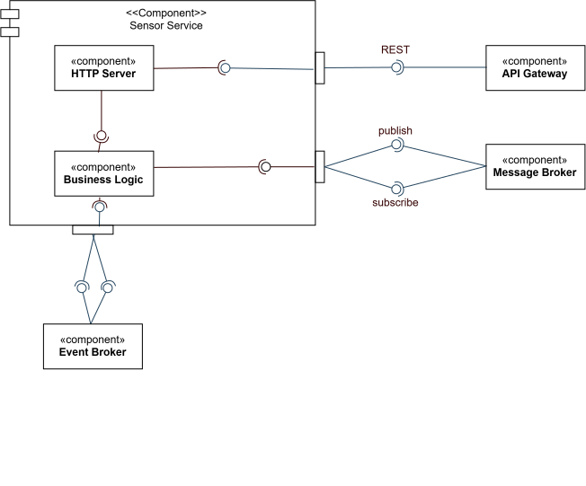

/
Developer Guide
Bounded context: Telemetry Ingestion · Stack: Rust / Axum / Postgres + TimescaleDB · Code-level walkthrough: Telemetry Service
The telemetry-service realises the Telemetry Ingestion context. It is the platform’s ingestion gateway, and its architecture answers two independent pressures: absorbing new sensor types without touching the core, and keeping every I/O technology out of the logic that decides what a reading means.
Hexagonal (ports & adapters) and microkernel on orthogonal axes. They are not competing patterns here; each governs a different direction of change.
| Axis | Pattern | Varies |
|---|---|---|
| Outward — infrastructure | Ports & adapters | Postgres, Redis, Kafka, twin-service, physical devices |
| Inward — domain | Microkernel | which metrics exist, what they validate, which bounds they carry |
The Node predecessor had the microkernel half only. Its modules owned their own persistence and Redis calls, so infrastructure reached into every metric implementation.
| Directory | Holds | May import |
|---|---|---|
src/contracts/ | pure types, SensorPlugin and ActionSpec, threshold and query rules | nothing |
src/kernel/ | use cases over Arc<dyn Port> — the microkernel | contracts |
src/plugins/ | one file per metric, each a SensorPlugin | contracts |
src/adapters/ | Postgres, Redis, Kafka, HTTP in and out | everything |
The kernel never names a plugin. Every metric-specific decision is reached through a &dyn SensorPlugin resolved from PluginRegistry, so a new metric is a new file plus one registration line in main.rs.
tests/architecture.rs enforces the table: no crate::plugins or crate::adapters under src/kernel, no I/O crate under src/kernel or src/contracts, and no plugin importing a sibling.
Cannot call function mermaid(...) with arguments (...):
Unresolved reference: authz
.mermaid
graph TD
subgraph Driving
HTTP[HTTP API]
KC[Kafka registration consumer]
end
subgraph Kernel
K[Use cases: ingest, readings, thresholds, sensors, actions, registration]
R[PluginRegistry]
end
... (23 more lines)

MetricDescriptor names the fields, their kinds, the unit, and which field becomes value; bounds() names the threshold keys; actions() names what the metric can be told to do. GET /contracts and POST /ingest are driven by the same declaration, so the catalog and the validator cannot drift.Arc<dyn ReadingStore>, not a PgPool. The whole kernel is unit-tested against in-memory fakes with no database in sight.room_id NULL means building-level; a room-level row wins during resolution. Room thresholds cannot be silently dropped.ActionDispatch takes a Command in our own vocabulary; URLs, methods and field names exist only in the dispatch adapter. See Sensor Actions & the Device ACL.telemetry-db (Postgres + TimescaleDB); no other service reads it. Retention and rollup policy in Telemetry Storage & Retention.telemetry:raw, and every threshold breach to alerts:<metric> — alerts:temperature, alerts:peopleCount, alerts:airQuality — with no reference to whichever service consumes them.PUT /thresholds/buildings/:id) for every later edit. Both are driving adapters over the same registration use case.GET /contracts, now including each metric’s available actions./metrics. See Observability.For the request lifecycle, the plugin template, the extension guide, and the API, see the Telemetry Service internals page.